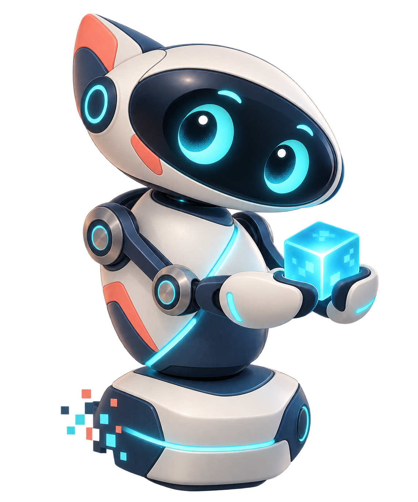
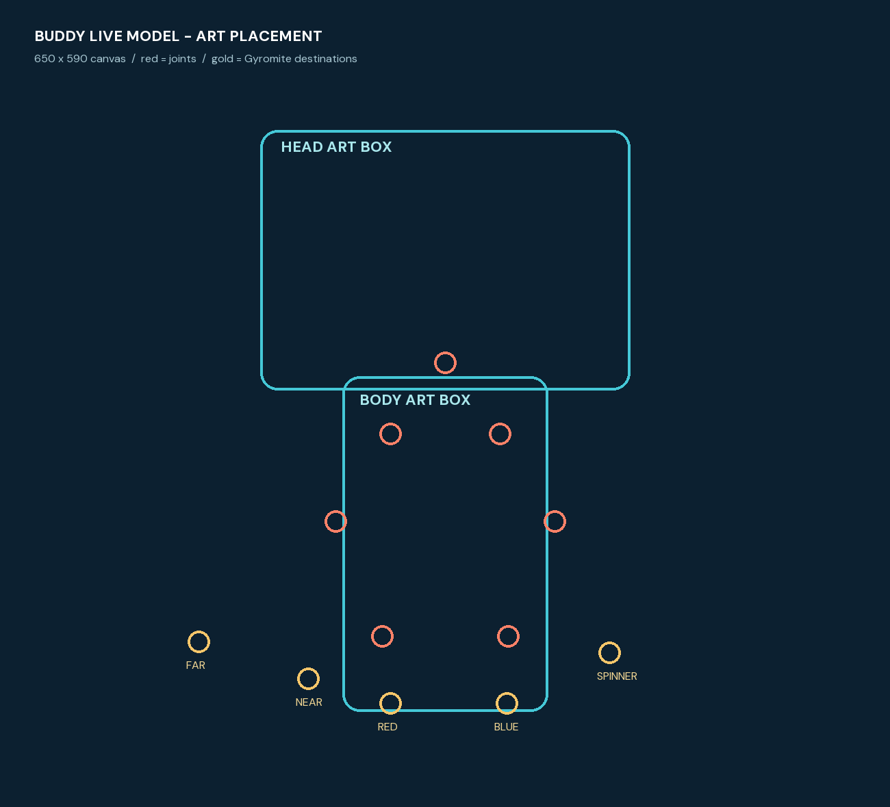

GET THE GUIDE.
Download the starter ZIP. It includes the artist PDF, the current Buddy design, placement guides, and an editable SVG example for every artwork part. Its skin.json selects just the head to start.

YOUR ART / BUDDY'S MOVES
Give the on-screen robot your own character. Paint a new head, design articulated arms, or reimagine the fixed stage. Buddy will still follow the game, and gyros and Stack-Up blocks keep their original look.
START WITH ONE PART
Change a single detail or build a complete look. Parts you leave alone keep their original design.

The guide marks where moving parts connect and where the original game pieces land. A background can be freely illustrated; custom hands, trays, and pads need to line up with those marks.
THREE STEPS
Download the starter ZIP. It includes the artist PDF, the current Buddy design, placement guides, and an editable SVG example for every artwork part. Its skin.json selects just the head to start.
Use transparent PNG or SVG artwork for Buddy and fixed stage fixtures. You can mix them. Keep arms in separate pieces so shoulders, elbows, and hands can move. Game pieces stay original.
On your UNO Q, open Setup > Skins. Add files one by one or import a skin ZIP. Preview Gyromite and Stack-Up, then activate or export your design. Open Mission pages can use Refresh Buddy to see the new skin.
MAKE IT YOURS
The UNO Q saves several named skins. One is active for everyone viewing that Buddy; an open Mission page uses Refresh Buddy to load changes. Original Buddy is always available. Gyros, Stack-Up blocks, and the smaller Game Table keep their original look.
Draw a transparent head image, upload it in Setup, and try the turn, lift, and grip previews. The artist PDF walks through this first project.
Export your skin to send it to a friend. The included skin.json tells R.O.B. Vision which file belongs to each part; Setup creates it for you.